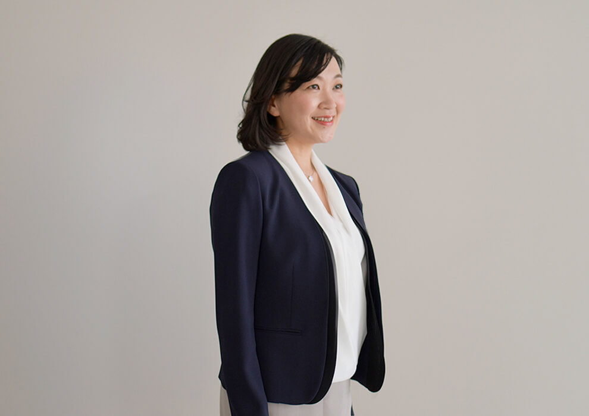
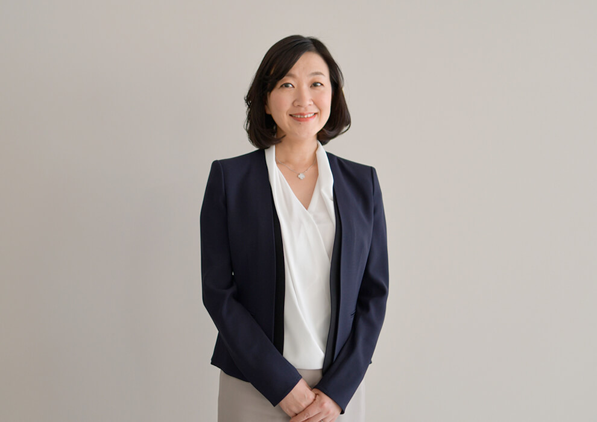
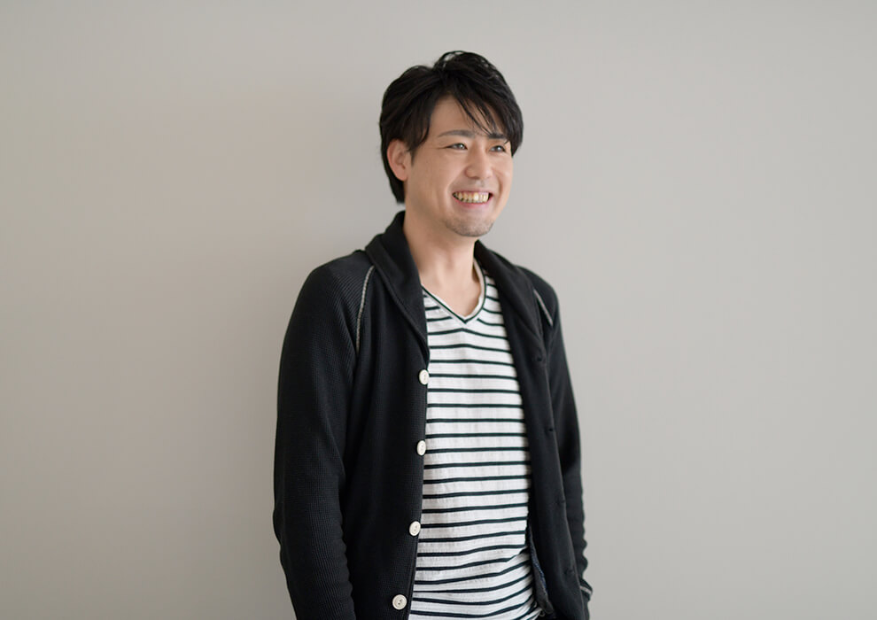
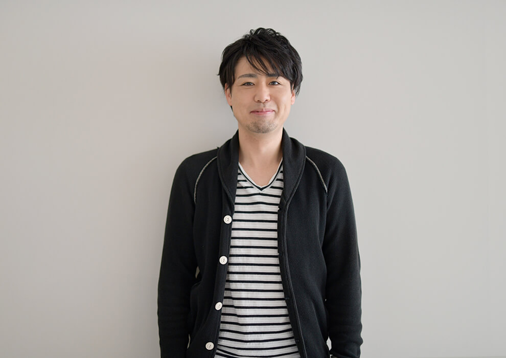
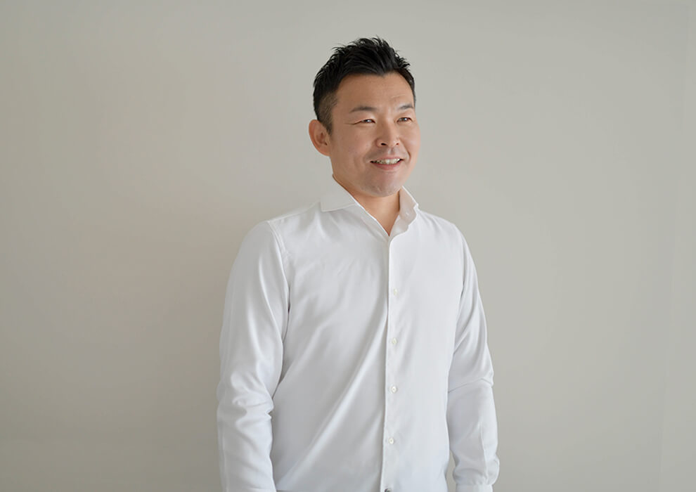
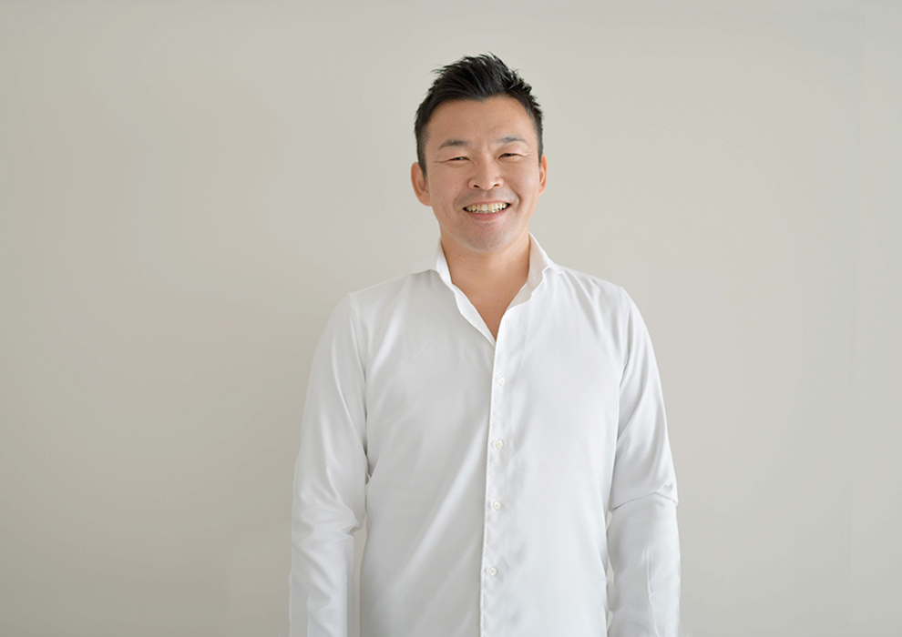
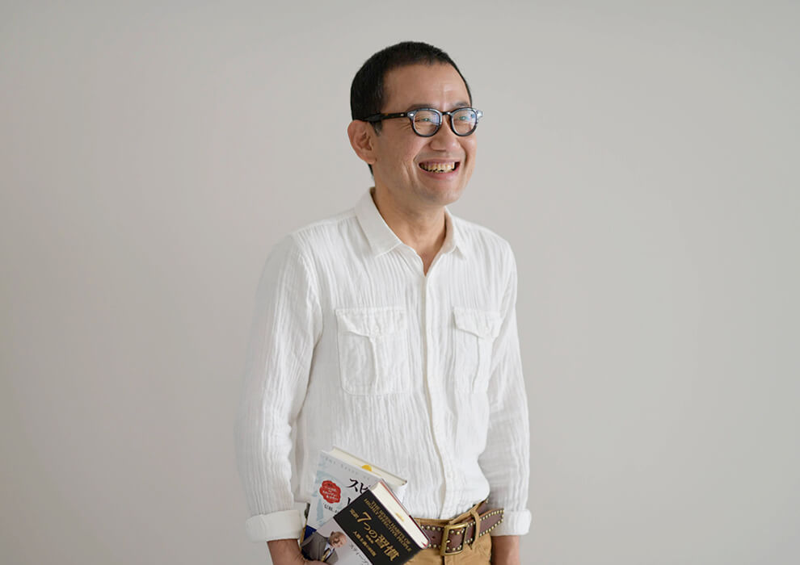
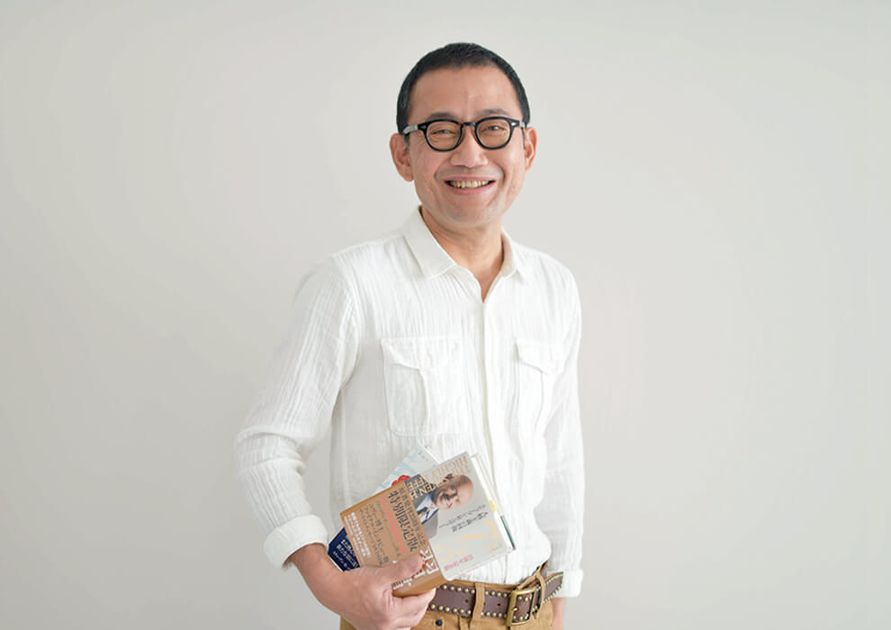

DIRECTORS
役員、グループ会社代表紹介
FCE Holdings役員
-
- 株式会社FCE Holdings代表取締役
- 石川 淳悦
1985年茨城県立水戸第一高校卒業。
3年間のフリーターを経て県内の建設会社に勤務。
1998年に上京し一部上場経営コンサルティング会社に入社。
中古車買取り専門店ガリバー、炭火焼肉酒家牛角、しゃぶしゃぶ温野菜チェーンのチーフコンサルタントとして立上げ支援、業績改善に貢献。
2000年300人のコンサルタントを束ねるSV本部副部長に就任。
2002年新事業を立ち上げる事業開発本部長に就任。「7つの習慣®」子ども向けプログラムの独占ライセンス権獲得交渉にあたる。
2005年人財開発本部長に就任。新卒のエントリー数を4,700人から2年で約50,000人に。
2009年株式会社FCEエデュケーション代表取締役会長に就任。
2017年株式会社FCE Holdings代表取締役に就任。 -
- 株式会社FCE Holdings取締役株式会社FCEエデュケーション取締役会長
- 鈴木 甲子雄
1997年早稲田大学商学部卒。同年、一部上場経営コンサルティング会社に入社。
新卒2年目に提携企業の取締役社長室長 として抜擢され、出向。
その後、コンサルタントとして、フランチャイズ事業の立ち上げに関わるなど、数々の急成長フランチャイズの開発・展開支援を行った。
さまざまな事業展開を通して、働く人の人材育成に深い関心を持つようになる。
28歳の時『7つの習慣』と出会い、日本の子どもたちに伝えたいという想いを元に、翌年、株式会社FCEエデュケーションを設立。
「7つの習慣®」を小中高生向けにアレンジした教育プログラム「7つの習慣Ｊ®」を全国の400教室以上の学校・学習塾に提供している。
2017年に株式会社FCE Holdings取締役、2018年には株式会社FCEエデュケーション代表取締役会長に就任。 -
- 株式会社FCE Holdings取締役株式会社FCEエデュケーション代表取締役社長
- 尾上 幸裕
2002年同志社大学商学部を卒業。同年、一部上場経営コンサルティング会社に入社。
営業推進本部にて、フランチャイズの加盟開発に従事。その年の同期約100名中トップの成績を収める。
新卒2年目で、営業全20チームの最年少リーダーに抜擢。
2004年「7つの習慣Ｊ®」事業に合流し、展開に関わる中日本MGR、東日本MGR等を歴任。2014年株式会社FCEエデュケーション学習事業部の事業部長に33歳で就任。
2013年より功労者表彰にて、4度の年間最優秀賞を受賞。
2016年株式会社FCEエデュケーション取締役、2018年株式会社FCEエデュケーションと株式会社グローバルアカデミーの代表取締役社長に就任。
2019年株式会社FCE Holdings取締役に就任。 -
- 株式会社FCE Holdings取締役株式会社FCEプロセス＆テクノロジー代表取締役社長
- 永田 純一郎
2002年横浜国立大学経営学部卒業。一部上場経営コンサルティング会社に入社後、新規事業開発を担当。月間100件以上の提携検討の依頼や事業展開の経営相談を受け、ありとあらゆるビジネスモデル、商品・サービスに触れる。
FCEグループでも新規事業開発を担当し、数多くのビジネスモデル研究やマーケティングを行う傍ら、2013年株式会社ダイニングエッジインターナショナル取締役、同年株式会社FCEエデュケーション取締役に就任。FCEグループの管理部門担当役員として自社業務の生産性向上を推進。その際、RPAという技術と出会い、2015年グループ内で自ら代表として株式会社FCEプロセス＆テクノロジーを設立し、RPA事業に進出。
近年は経済同友会等で「現場を変える働き方改革、業務改善」についての講演活動も行っている。
2019年株式会社FCE Holdings取締役に就任。 -
- 株式会社FCE Holdings社外取締役
- 辛坊 正記
1973年一橋大学商学部卒業。同年、株式会社住友銀行（現三井住友銀行）に入行。
在職中、慶應義塾大学大学院経営管理研究科1年制課程、コロンビア大学経営大学院を修了。その後、住友銀行ニューヨーク信託会社社長、住友銀行アトランタ支店長、住友ファイナンスエイシア社長などを歴任。
株式会社日本総研情報サービス代表取締役、エリーパワー株式会社取締役常務執行役員を務め、現在は、経済評論家、経営コンサルタントとして活躍中。
2018年株式会社FCE Holdings取締役に就任。 -
- 株式会社FCE Holdings社外取締役
- 津田 晃
1968年 早稲田大学商学部卒業
1968年 野村證券株式会社入社
1987年 同社取締役大阪支店長
1996年 同社代表取締役専務・事業法人担当
1999年 株式会社ジャフコ代表取締役副社長
2002年 野村インベスター・リレーションズ株式会社取締役会長
2005年 日本ベンチャーキャピタル株式会社代表取締役社長、日立キャピタル株式会社取締役
2018年 一般社団法人日本コンプライアンス推進協会会長（現任）
2019年 株式会社FCE Holdings 取締役に就任。 -
- 株式会社FCE Holdings監査役（常勤）
- 須藤 伸一
1983年駒澤大学経済学部卒業。
DVD・CDのレンタル大手FC本部の経理部に従事後、執行役員、関係会社の取締役、監査役員を歴任。
退職後、Ｍ＆Ａや上場支援等を中心に活動。2019年株式会社FCE Holdings常勤監査役に就任。
グループ会社代表
-
  - 株式会社FCEトレーニング・カンパニー代表取締役社長
- 荻野 純子
流通科学大学商学部卒業。大手人材ビジネス会社に入社。法人営業・キャリアコンサルタントとして、年間MVPを受賞するなど、活躍。
2007年一部上場経営コンサルティング会社に転職し、人財開発本部で採用研修業務に従事したのち、2010年株式会社FCEトレーニング・カンパニー立ち上げに合流。
コンテンツ開発〜研修実施まで幅広く担当し、開発した自社オリジナルコンテンツ数は80以上。2500以上の研修・トレーニングを実施し、導入企業のリピート率は90％以上を誇る。
責任者として商品開発を手掛けた『xDrive』（中長期で成果を創出する組織作り支援）は、今やFCEトレーニング・カンパニーのコアサービスとなるなど、営業から研修講師、商品開発など幅広い面々で成果を創出。
2018年株式会社FCEトレーニング・カンパニー代表取締役社長に就任。 -
  - 株式会社ダイニングエッジインターナショナル
代表取締役社長 - 升本 甲一
2002年龍谷大学経済学部卒業後。同年、一部上場経営コンサルティング会社に入社。提携先のフランチャイズ本部のスーパーバイザー（SV）として活躍。 新卒1年目にして、200人を超えるSV部隊で1位の成績を収め、チーフスーパーバイザーに昇進。3年目で当時最年少マネージャーとして18人を統括する。2006年全社の最重要プロジェクトであった「中国進出」のメンバーに26歳で抜擢。同社の海外進出、アジアマーケットの調査というミッションを担い、単身中国・深セン市へ。
紆余曲折を乗り越えながら、4年半、中国支社の副社長として深センで外食事業などを展開。
2009年中国でのミッションを果たし、帰国。
2010年FCEグループに合流。2013年外食業界の課題解決を目指し、株式会社ダイニングエッジインターナショナルを設立。代表取締役社長に就任。 - 株式会社ダイニングエッジインターナショナル
-
  - 株式会社Findアクティブラーナー代表取締役社長
- 永井 充
1996年東京都立大学（現 首都大学東京）法学部卒業。
大学時代は体育会ヨット部に所属し、大学4年間は年間の半分以上を海で過ごす。
大学卒業後は、一般企業への就職はせず、国会議員秘書として日本の政治に従事。
政治から日本を変えるという想いを持ち、多忙な日々を過ごす。
2002年書店で何気なく出会った書籍に衝撃を受け、著者が社長をしていた一部上場経営コンサルティング会社に入社。店舗経営や企業経営について学ぶ。
2005年「7つの習慣Ｊ®」事業に合流。中日本エリアMGRとして、学校マーケットの開拓を担当。
2012年株式会社FCEエデュケーション スクール事業部 事業部長となる。
2015年多くの教員の方々と関わる中、先生方が学ぶ環境に大きな課題があることを感じ、Webで授業研究サービスを提供する株式会社Findアクティブラーナー設立。代表取締役社長に就任。 -
  - 株式会社FCEパブリッシング代表取締役社長
- 正木 晃
成蹊大学工学学部中退。大学在学中、広告宣伝の制作プロダクションに籍を置く。主に映像物のプロデュースを担当。大学を中退しそのままプロとなる。
1997年某大手企業の宣伝マンに転身。『7つの習慣』と出会い、衝撃を受ける。『7つの習慣』を広め、いい世の中をつくるというミッションを見出し、創業直後のフランクリン・コヴィー・ジャパンに合流。
2002年からは出版事業を兼務。最初に手がけた『7つの習慣ティーンズ』が大ヒット。2012年には宝島社の『まんがでわかる7つの習慣』を監修し、累計180万部の大ヒットとなる。世に送り出した書籍は累計で500万部以上、『7つの習慣』のiPhoneアプリ、電子書籍、オーディオブックなども手がけ、どれもがランキングNo1を獲得するヒットとなった。
2018年FCEグループに合流し、株式会社FCEパブリッシングの代表取締役社長に就任。